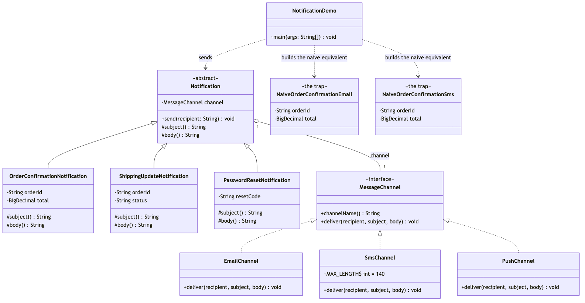

Bridge Pattern
Demonstrates the Structural Bridge design pattern using a notification system for an e-commerce store as an example.
Notification— the abstraction. Holds aMessageChannelby composition and delegates delivery to it:send(recipient)isfinaland callschannel.deliver(recipient, subject(), body()).MessageChannel— the implementor. The one interface every delivery mechanism implements:channelName(),deliver(recipient, subject, body).OrderConfirmationNotification/ShippingUpdateNotification/PasswordResetNotification— refined abstractions. Each composes its own subject and body; none of them know how delivery works.EmailChannel/SmsChannel/PushChannel— concrete implementors. Each owns one delivery mechanism's quirks:SmsChanneltruncates at 140 characters,PushChanneldrops the body and shows only the subject,EmailChannelpasses both through unchanged.NaiveOrderConfirmationEmail/NaiveOrderConfirmationSms/NaiveShippingUpdateEmail/NaiveShippingUpdateSms— the trap, kept for contrast. One class per (notification, channel) pair, with the SMS truncation logic copy-pasted between the two SMS classes.NotificationDemo— runnable entry point that sends notifications through all three channels, demonstrates SMS truncation on a long message, and contrasts the bridge approach with the naive one.
Run
./gradlew runWhich prints:
== Same notification, delivered through three different channels ==
[EMAIL to alex@example.com] Order ORD-1042 confirmed -- Your order ORD-1042 totalling $129.99 has been confirmed.
[SMS to +1-555-0142] Order ORD-1042 confirmed: Your order ORD-1042 totalling $129.99 has been confirmed.
[PUSH to device-9f31] Order ORD-1042 confirmed
== A different notification type, same channels, zero new channel code ==
[EMAIL to alex@example.com] Shipping update for order ORD-1042 -- Order ORD-1042 is now: out for delivery
[SMS to +1-555-0142] Shipping update for order ORD-1042: Order ORD-1042 is now: out for delivery
== A brand-new notification type reuses every existing channel ==
[EMAIL to alex@example.com] Password reset requested -- Use code 384920 to reset your password. It expires in 15 minutes.
== SMS truncates; Email does not -- channel behavior, isolated from notification code ==
[EMAIL to alex@example.com] Shipping update for order ORD-1099 -- Order ORD-1099 is now: delayed at customs due to an incomplete declaration, expect an update within 2 business days
[SMS to +1-555-0142] Shipping update for order ORD-1099: Order ORD-1099 is now: delayed at customs due to an incomplete declaration, expect an update within 2 b…
== The naive alternative, for comparison ==
[EMAIL to alex@example.com] Order ORD-1042 confirmed -- Your order ORD-1042 totalling $129.99 has been confirmed.
[SMS to +1-555-0142] Order ORD-1042 confirmed: Your order ORD-1042 totalling $129.99 has been confirmed.
[EMAIL to alex@example.com] Shipping update for order ORD-1042 -- Order ORD-1042 is now: out for delivery
[SMS to +1-555-0142] Shipping update for order ORD-1042: Order ORD-1042 is now: out for delivery
Four classes just for two notification types across two channels --
adding Push would mean two more, and a third notification type three more.Expected output:
== Same notification, delivered through three different channels ==
[EMAIL to alex@example.com] Order ORD-1042 confirmed -- Your order ORD-1042 totalling $129.99 has been confirmed.
[SMS to +1-555-0142] Order ORD-1042 confirmed: Your order ORD-1042 totalling $129.99 has been confirmed.
[PUSH to device-9f31] Order ORD-1042 confirmed
== A different notification type, same channels, zero new channel code ==
[EMAIL to alex@example.com] Shipping update for order ORD-1042 -- Order ORD-1042 is now: out for delivery
[SMS to +1-555-0142] Shipping update for order ORD-1042: Order ORD-1042 is now: out for delivery
== A brand-new notification type reuses every existing channel ==
[EMAIL to alex@example.com] Password reset requested -- Use code 384920 to reset your password. It expires in 15 minutes.
== SMS truncates; Email does not -- channel behavior, isolated from notification code ==
[EMAIL to alex@example.com] Shipping update for order ORD-1099 -- Order ORD-1099 is now: delayed at customs due to an incomplete declaration, expect an update within 2 business days
[SMS to +1-555-0142] Shipping update for order ORD-1099: Order ORD-1099 is now: delayed at customs due to an incomplete declaration, expect an update within 2 b…
== The naive alternative, for comparison ==
[EMAIL to alex@example.com] Order ORD-1042 confirmed -- Your order ORD-1042 totalling $129.99 has been confirmed.
[SMS to +1-555-0142] Order ORD-1042 confirmed: Your order ORD-1042 totalling $129.99 has been confirmed.
[EMAIL to alex@example.com] Shipping update for order ORD-1042 -- Order ORD-1042 is now: out for delivery
[SMS to +1-555-0142] Shipping update for order ORD-1042: Order ORD-1042 is now: out for delivery
Four classes just for two notification types across two channels --
adding Push would mean two more, and a third notification type three more.Test
./gradlew test11 tests, covering notification content composition (NotificationTest), each channel's delivery behavior including SMS truncation (SmsChannelTest, EmailChannelTest, PushChannelTest), the naive alternative's matching output (NaiveNotificationsTest), and the demo's printed output (NotificationDemoTest).
Learning Material
Start here if you are new to the pattern — the docs are ordered as a learning path.
| Document | What it covers |
|---|---|
docs/prerequisites.md | What to know and install before you start |
docs/problem-statement.md | The problem the pattern solves, and why the naive approach hurts |
docs/bridge-pattern-explained.md | The pattern itself, the code walked through, pitfalls, and comparisons |
docs/class-diagram.md | Static structure |
docs/uml-diagram.md | Runtime call flow |
docs/animation.html | Animated, step-by-step walkthrough — open in a browser. Optional narration via the Narration button |
docs/session.md | A 60-minute guided session plan for teaching it |
docs/youtube.md | Title, description, chapters and thumbnail for publishing the video |
docs/thumbnail.png | The 1280×720 image to upload as the YouTube thumbnail |
docs/spec.md | The project specification — problem, code, video and publishing quality bar. Also as spec.html |
video/ | A narrated ~7.5 minute video, plus the script and build pipeline |

The pattern in one picture

Video
video/bridge-pattern-explained.mp4 — 1080p, ~7.5 minutes, narrated. An audio-only version is alongside it. See video/README.md to rebuild or re-record it.